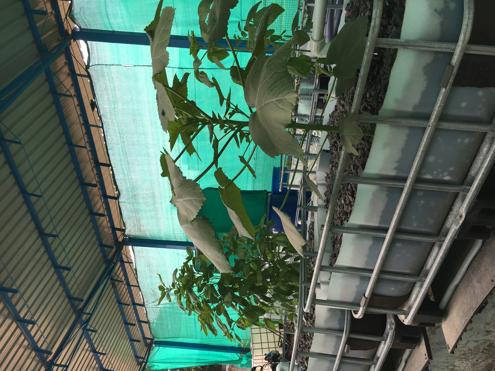
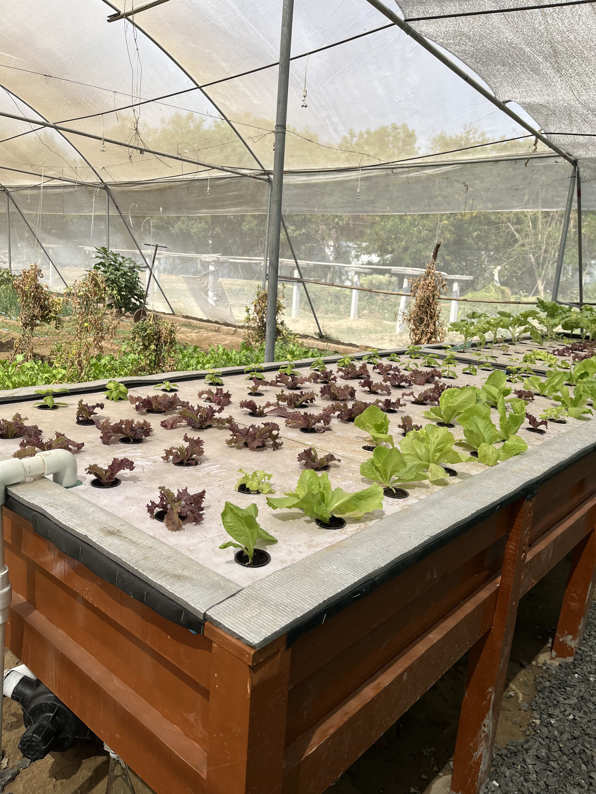
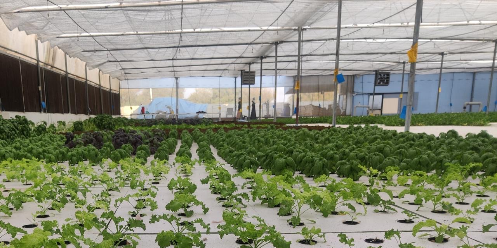

From Prototype to Commercial Scale: The Evolution of Our Farms

Small-Scale Aquaponics System — Prototype
Our first build — proof that the core aquaponics loop worked: fish waste converting into nutrients for plants, in a small, controlled setup.

Backyard iAVS System
A step up in complexity — combining an aquaponics unit with a sand-based grow bed, adding natural biofiltration to the growing process alongside the fish-plant nutrient loop.

Commercial-Scale iAVS Farm — 2,000 sqm, Ahmedabad, Gujarat
A commercial iAVS system we designed and built as a consulting project. The system runs on the same closed-loop principle as our smaller builds, scaled up and diversified: fish tanks feeding a sand biofilter system alongside DWC — Deep Water Culture grow beds, growing vine crops like tomato and basil alongside leafy greens and microgreens — all on one recirculating water cycle, with no soil and no synthetic fertilizer.
The results speak for the system itself: organic vegetables grown at yields of 50–150 kg/m²/year, up to 7–30x conventional farming, with zero chemical run-off and up to 90% less water use — proof that iAVS delivers at commercial scale, not just in a backyard prototype.